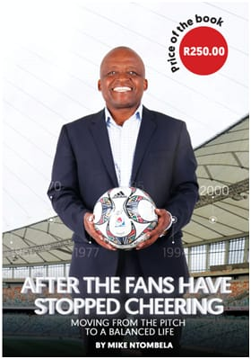

top
"Diski Nine9 has achieved substantial impact across all 3 programmes."
~ Mmusa TsubeaneMeet Fezile Hlophe. In 2015, Fezile joined Diski Nine9 as a soccer referee at 15 years of age. Fezile is a throat cancer survivor who has become South Africa’s youngest professional soccer referee at age 16 when he officiated a professional soccer match between Kaizer Chiefs vs. University of Pretoria. Diski Nine9 has worked with Absa to make a short film titled “Madala” about Fezile’s life in an effort to raise funds to provide extra lessons to help Fezile pass grade 11 and grade 12. Due to cancer treatment, Fezile was in and out of school for 2 years and as a result, his education suffered. With the help of Absa, Fezile managed to finish high school. The short film seen by over 1 million people on social media was seen by John Carlin, the author of Invictus the bestselling book that was turned into a Hollywood blockbuster. John Carlin requested Diski Nine9 to tell Fezile’s story in an Amazon Original 6 part documentary called This is Football that premiered globally on 2 August 2019. Through working on This is Football, Diski Nine9, John Carlin and the Harry Crossley Foundation identified Fezile’s talent in front of the camera and have raised funding for Fezile to enrol at a film school in 2020. We believe that Fezile’s love for film and sports will make him a great sports TV journalist and presenter in the future.
Mbalenhle grew up in Soweto and was always interested in sports. She started playing netball at an early age and as she grew older, Mbalenhle started coaching a netball team. Upon joining Diski Nine9 in 2016, she realised that the organisation only focused on soccer. With her experience in netball, she saw it fit that we include netball in our School & Sports Holiday Programme and it was approved. Mbalenhle ran a netball league on behalf of Diski Nine9 for schools and clubs around Soweto. After coordinating these leagues for 2 years without being paid, founders of Diski Nine9 were impressed with her commitment and employed her as a Project Manager on a 12-month paid internship. Additional to managing the netball league, she also manages a group of individuals who are part of the Diski Nine9 Sports Hospitality Academy.
Sonto Mashaba is a 44 years old Netball Coach boasting over 10 years of experience in school sports and 15 years in the coaching field. She joined Diski Nine9 in 2017 and has been working very closely with Mbalenhle to provide well planned and executed netball events for both the After-School and School & Sports Holiday Programmes. Sonto recently received the 2019 District Netball Coach of the Year Award presented at the Gauteng School Sport Awards Ceremony in December 2019. Diski Nine9 is very pleased with the progress they have made thus far. The organisation is, however, very hopeful that the year 2020 will bring more success in the form of long-term jobs in the communities they operate in and empower more young people. Mbalenhle grew up in Soweto and was always interested in sports. She started playing netball at an early age and as she grew older, Mbalenhle started coaching a netball team. Upon joining Diski Nine9 in 2016, she realised that the organisation only focused on soccer. With her experience in netball, she saw it fit that we include netball in our School & Sports Holiday Programme and it was approved. Mbalenhle ran a netball league on behalf of Diski Nine9 for schools and clubs around Soweto. After coordinating these leagues for 2 years without being paid, founders of Diski Nine9 were impressed with her commitment and employed her as a Project Manager on a 12-month paid internship. Additional to managing the netball league, she also manages a group of individuals who are part of the Diski Nine9 Sports Hospitality Academy.
"I have always seen sport as entertainment but now I can see that I can make a living by being employed in the sports industry."
~ Mbalenhle MalekaMr. Mike Ntombela has been working with Diski Nine9 since 2017 and has been responsible for scouting for young talent for professional soccer teams as well as providing leadership and entrepreneurship education for Diski Nine9 coaches and volunteers. Ntombela uses his knowledge, experience and networks to support Diski Nine9’s programmes. Ntombela is a retired professional footballer, having played professionally for Bidvest Wits and Mamelodi Sundowns (where he captained the team). He was assistant coach at Mamelodi Sundowns and the National U23 soccer team. After his coaching career, Ntombela joined Adidas as a football manager for 12 years and played a key role for the brand during the 2010 Fifa Soccer World Cup. Ntombela is an experienced, entrepreneur, scout and TV sports analyst, having discovered and nurtured young talent for numerous professional football players including Thulani Hlatshwayo (current Bafana Bafana captain) and Thulani Serero (Bafana Bafana player and one of South Africa’s most successful international players currently playing in the Netherlands for Vitesse). Ntombela has written a book titled “After The Fans Have Stopped Cheering – Moving From The Pitch To A Balanced Life” about his life in sports and seeks to educate young athletes about the importance of living a balanced life financially and socially. Ntombela is currently working on building a multi sport facility in his hometown of Senaone in Soweto.
NO picture.Alec content missing
Bongiwe is the Captain of the South African netball team - also known as the Spar Proteas. Bongiwe recently led the Spar Proteas to winning the 2019 Africa Netball Cup. Bongiwe started working with Diski Nine9 in 2019 and has also began training amateur netball coaches from Diski Nine9's Greater Protea Netball League and assisting them in obtaining Level One coaching licenses through Netball South Africa.
Captain of 2016/17 PSL Champions Bidvest Wits FC and Bafana Bafana – Thulani started working with Diski Nine9 in 2017. Tyson - as he is known - runs a team's captain leadership workshop for 120 boys and girls aged 12 – 18 from Diski Nine9. Tyson has not only volunteered his time, knowledge and expertise to the learners, he has also donated soccer boots and balls to the organisation through his brand sponsorship, Adidas South Africa